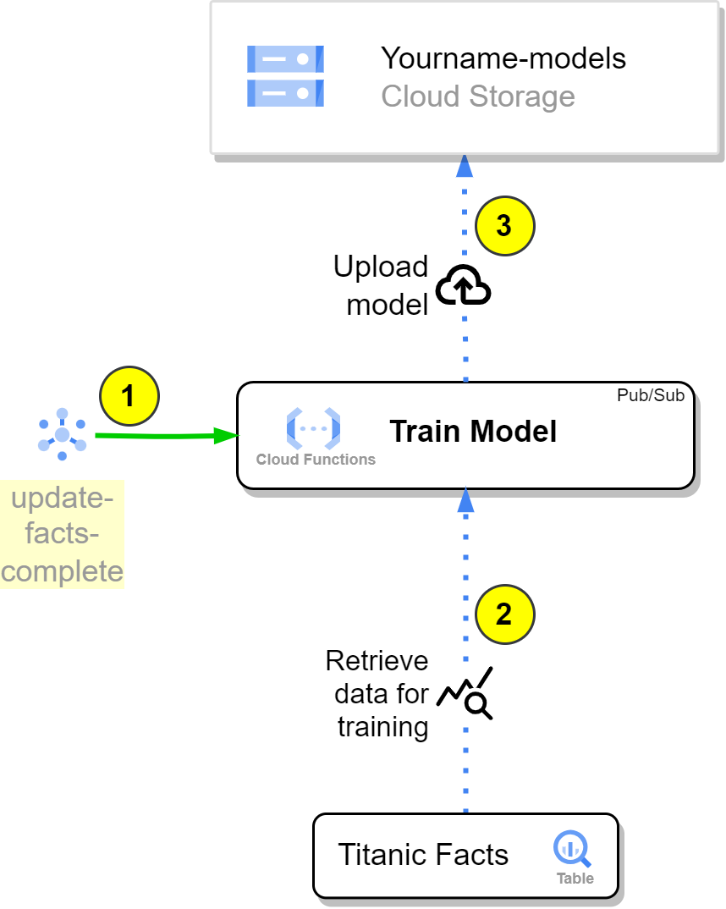

Deploy a Cloud function that trains a model and saves it in GCS¶
- Deploy a Cloud function that trains a model and saves it in GCS
- Introduction
- Tasks
- Create the Google Cloud Resources
- Update the Cloud Function Code
- Deploy the cloud function
- Documentation
Introduction¶

In this exercise, we will create a Cloud Function called Train Model, which will be responsible for training a machine learning model using the data ingested in the previous steps. The function will be triggered by the ingestion_complete Pub/Sub topic, ensuring it starts training once new data is available in the BigQuery table. The steps involved in this process are as follows:
-
The
Train ModelCloud Function is subscribed to the[yourname]-update-facts-completetopic, and it will be triggered automatically when a new message is published, indicating that new data has been loaded into the BigQuery table. -
Upon being triggered, the
train_modelfunction retrieves the data from theTitanic FactsBigQuery table using the appropriate query. This data will be used to train a machine learning model, such as a Scikit-learn Random Forest or Logistic Regression model. -
After the model is trained using the fetched data, the
Train Modelfunction saves the trained model to the[yourname]-modelsGoogle Cloud Storage bucket. You can choose the name for this model, but it should be unique.
This exercise will guide you through the process of developing the train_model Cloud Function, which leverages the power of BigQuery, Scikit-learn, and Google Cloud Storage to create, train, and store a machine learning model.
For this you will need these resources:
- The already created Data Set in step 1.
- The already created Bigquery Table in step 2.
- A Pub/Sub topic named
[yourname]-train_model-completewhere you will publish a success message. - One GCS Bucket named
[yourname]-modelswhere you will save the model
The outline of the Cloud Function code is available at ./functions/manual_exercises/c_train_model/app
c_train_model/
├── app/
│ ├── funcs/
│ │ ├── models.py # Models to make typechecking easier.
│ │ ├── gcp_apis.py # Functions to call google services.
│ │ ├── common.py # Common functions (Utils).
| | └── train_model.py # Train model functions
│ ├── main.py # Main module and entry point for the Cloud Function
│ └── requirements.txt # Requirements for the function execution.
├── config/
│ └── dev.env.yaml # Environment variables that will ship with the function deployment
└── tests/
└── test_*.py # Unit tests.
Tasks¶
- Create the Google Cloud Resources
- Update the Cloud Function Code
- Test the Cloud Function
- Deploy the Cloud Function
Create the Google Cloud Resources¶
Here are the resources necessary to complete the exercise:
You can create the resources with Cloud Shell or in the Console. The end result will be the same. When creating a resource, choose either to create it with the cloud shell or the console, but not both.
For Cloud Shell, set these variables:
export PROJECT_NAME=$(gcloud config get-value project)
export REGION=europe-west3
export YOURNAME=your_name_in_lowercase

1. Create the models GCS Bucket¶
gsutil mb \
-c regional \
-l ${REGION} \
-p ${PROJECT_NAME} \
gs://${YOURNAME}-models
gsutil label ch -l owner:${YOURNAME} gs://${YOURNAME}-models
gsutil label ch -l project:${PROJECT_NAME} gs://${YOURNAME}-models
gsutil label ch -l purpose:academy gs://${YOURNAME}-models
Reference: gsutil mb, gsutil label
With the console:
Same as in step 1, but now the bucket name is [yourname]-models
Update the Cloud Function Code¶
-
Create the client objects: Use the Google Cloud BigQuery API, and Storage API to create respective client objects.
################ # 1. Clients ### ################ storage_client = 'Create a storage client here, with the correct project ID argument' bigquery_client = 'Create a bigquery client here, with the correct project ID argument' return models.GCPClients( storage_client=storage_client, bigquery_client=bigquery_client, ) -
Set Environment Variables
In the
c_train_model/config/dev.env.yamlfile, change the environment variables for the correct ones.############################## # 2. Environment variables ### ##############################_GCP_PROJECT_ID: "The GCP project ID where the resources are located" _GCS_BUCKET_NAME_MODELS: "The GCS bucket name where the models will be saved" _TOPIC_TRAINING_COMPLETE: "The Pub/Sub topic name where the success message will be published" -
Create the SQL Query
You can find the query to change in the
c_train_model/app/resources/select_train_data.sqlfile.######################################################## # 3. Create a query that retrieves the training data ### ######################################################## query = common.query_train_data( table_fqn='??' query_path=path )SELECT 'THIS QUERY IS NOT IMPLEMENTED YET' FROM `{table_source}`Do not change to `{table_source}` section.
-
Correct the arguments in the
model_save_to_storagefunctiongcp_apis.model_save_to_storage( CS='??', model='??', bucket_name='??' )
Deploy the cloud function¶
You can check the deployment here in Cloud Build
Reference: gcloud functions deploy
FUNCTION_NAME="train_model"
YOURNAME="your_name_in_lowercase"
gcloud beta functions deploy $YOURNAME-$FUNCTION_NAME \
--gen2 --cpu=1 --memory=512MB \
--region=europe-west3 \
--runtime=python311 \
--source=functions/simple_mlops/c_train_model/app/ \
--env-vars-file=functions/simple_mlops/c_train_model/config/dev.env.yaml \
--entry-point=main \
--trigger-topic=$YOURNAME-update-facts-complete
Documentation¶
Does not work without the code correct.